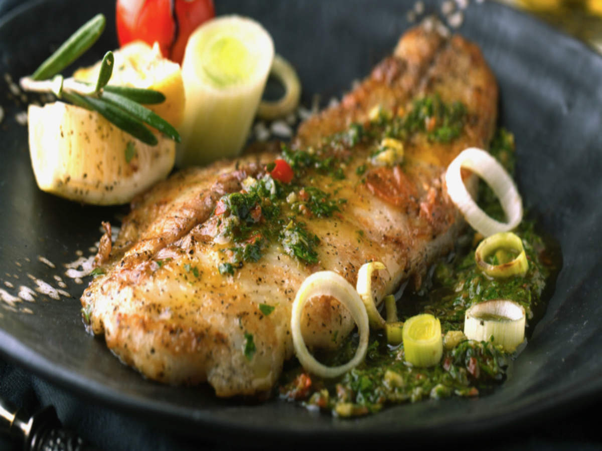

Garlic butter fish is one of the best fish recipes, pan-fried with garlic butter sauce. This garlic butter fish recipe takes 20 mins. Serve alone or with pasta for a wholesome dinner.

COOK'S TIPS
Use a firm white fish. Other than halibut, you can also use cod, mahi mahi or pollock.
Use a wooden spatula to gently flip the fish over while cooking. Try not to break the fish.
INSTRUCTIONS
Cut the fish into pieces, not to thin for easy pan-frying. Season the fish with salt, black pepper and cayenne pepper. Coat the fish with corn starch. Set aside.
Prepare the Garlic Butter Sauce by mixing all the ingredients together. Set aside.
Heat up a skillet (preferably non-stick) on medium heat. Add the cooking oil and once the oil is heated, pan-fry the fish in a single layer until both sides turn crispy and golden brown. Use a wooden spatula or tong to gently flip the fish over. Try not to break the fish.
Remove the fish from the skillet and drain on paper towels. Toss the fish with the Garlic Butter Sauce and serve immediately with lemon wedges.
HOW MANY CALORIES PER SERVING?
Fish are extremely healthy and low calories. This recipe is only 346 calories per serving.